1 イシのハラ
1/18｜2025/12/21
5BN82
多了哪些牌
 +3
+3 +3
+3 +3
+3 +2
+2 +1
+1 +1
+1 +1
+1少了哪些牌
 -3-3
-3-3 -2
-2 -2
-2 -2-1-1
-2-1-1 主BP09-018/BP09-SL04/PR-222/SP01-011/SP01-SL11/SP01-SP06/SP01-U05：空の指揮官・セリア主卡组 × 3主BP09-032：粗暴な豪剣士主卡组 × 2主BP11-031/BP11-P07：ナハトの私兵主卡组 × 2
主BP09-018/BP09-SL04/PR-222/SP01-011/SP01-SL11/SP01-SP06/SP01-U05：空の指揮官・セリア主卡组 × 3主BP09-032：粗暴な豪剣士主卡组 × 2主BP11-031/BP11-P07：ナハトの私兵主卡组 × 2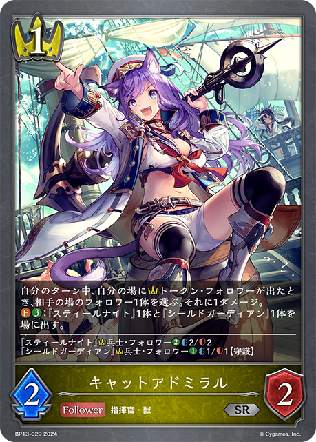
主BP13-029：キャットアドミラル主卡组 × 3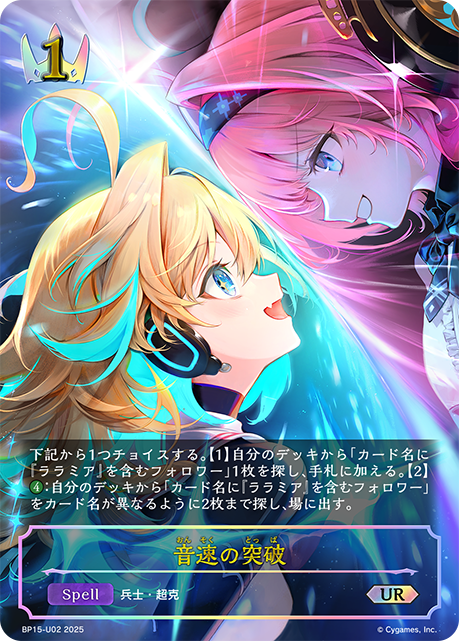
主BP15-027/BP15-U02：音速の突破主卡组 × 1主BP16-031：刹那のクイックブレイダー主卡组 × 1 主BP06-019/BP06-SL05/SP01-012/SP01-SL12/SP01-SP07/SP01-U06：音速の機構・ララミア主卡组 × 3
主BP06-019/BP06-SL05/SP01-012/SP01-SL12/SP01-SP07/SP01-U06：音速の機構・ララミア主卡组 × 3 主BP07-022/PR-182/PR-325：月の刃・リオード主卡组 × 3主BP08-034：神速の歩法主卡组 × 3
主BP07-022/PR-182/PR-325：月の刃・リオード主卡组 × 3主BP08-034：神速の歩法主卡组 × 3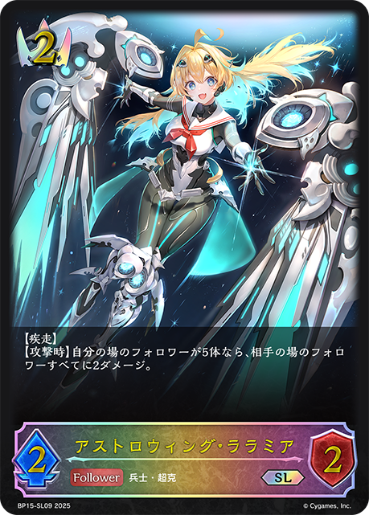
主BP15-023/BP15-SL09：アストロウィング・ララミア主卡组 × 3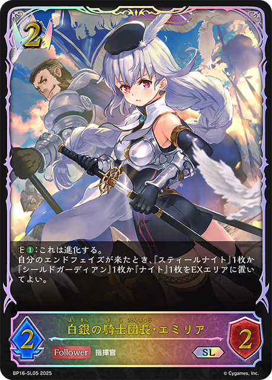
主BP16-019/BP16-SL05：白銀の騎士団長・エミリア主卡组 × 3 主BP17-019/BP17-SL05/BP17-U03：忠義の剣士・エリカ主卡组 × 3主BP17-029：ブレイドライツの小隊長主卡组 × 2主BP08-023/PR-200：紫電の黒豹主卡组 × 2
主BP17-019/BP17-SL05/BP17-U03：忠義の剣士・エリカ主卡组 × 3主BP17-029：ブレイドライツの小隊長主卡组 × 2主BP08-023/PR-200：紫電の黒豹主卡组 × 2 主BP11-018/BP11-SL04/BP11-SP01/BP11-U02/SD07-004：カースドクイーン・ナハト・ナハト主卡组 × 3
主BP11-018/BP11-SL04/BP11-SP01/BP11-U02/SD07-004：カースドクイーン・ナハト・ナハト主卡组 × 3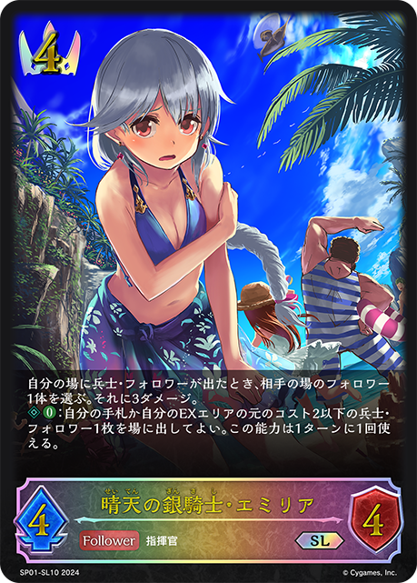
主SP01-010/SP01-SL10/SP01-SP05/SP01-U04：晴天の銀騎士・エミリア主卡组 × 3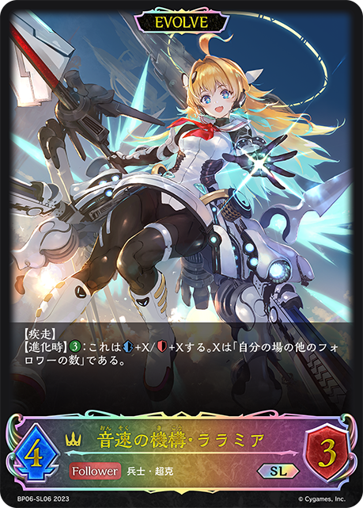
进BP06-020/BP06-SL06/BP06-U02/SP01-013/SP01-SL13/SP01-SP08/SP01-U07：音速の機構・ララミア进化 × 3 进BP07-023/PR-216/PR-326：月の刃・リオード进化 × 2
进BP07-023/PR-216/PR-326：月の刃・リオード进化 × 2 进BP09-019/BP09-SL05：希望の戦術家・セリア进化 × 2
进BP09-019/BP09-SL05：希望の戦術家・セリア进化 × 2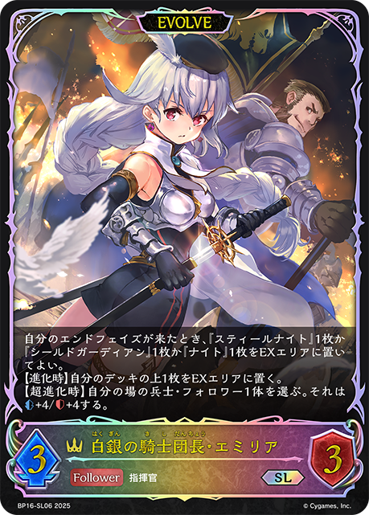
进BP16-020/BP16-SL06：白銀の騎士団長・エミリア进化 × 2进BP16-032：刹那のクイックブレイダー进化 × 1+3+3+3+2+1+1+1-3-3-2-2-2-1-1+3+3 +2+2
+2+2 +1+1+1+1-3-3-2-2-2-1-1
+1+1+1+1-3-3-2-2-2-1-1 +3+3+3+2
+3+3+3+2 +1+1
+1+1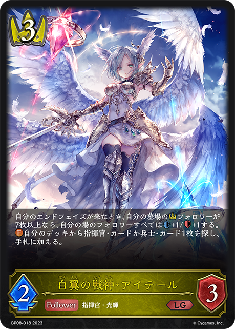
+1+1-3-3-2-2-2-1-1-1+3+3+2+2+2+1+1+1+1-3-3-2-2-2-1-1-1-1+3+3+3+2+1+1+1-3-3-2-2-2-1-1+3+3+2+1+1-3-3-2-1-1 +3+3+3
+3+3+3 +2+1-3-3-2-2-1-1+3+3+3+2+1+1+1-3-3-2-2-2-1-1+3+3+2+1+1+1+1-3-3-2-2-1-1
+2+1-3-3-2-2-1-1+3+3+3+2+1+1+1-3-3-2-2-2-1-1+3+3+2+1+1+1+1-3-3-2-2-1-1 +3+3
+3+3 +2+2+2+2+1+1+1+1-2-2-2-1-1-1-1+3+3+2+2+1
+2+2+2+2+1+1+1+1-2-2-2-1-1-1-1+3+3+2+2+1 +1+1+1-2-2-1-1-1-1+3+3+3+3+2+2+2+1+1-3-3-3-2-2-2-2-1-1-1+3+3+2+2+2+2+1-2-2-2-1-1-1-1-1-1+3+3+3+2+1+1+1+1-3-3-2-2-2-1-1-1+3+3+3+2+2+2+1-3-3-3-2-2-2-1+3+3+2+2+2+1+1+1-3-3-2-2-2-1-1-1+3+3+2+2+1+1+1+1+1-3-3-2-2-2-1-1-1
+1+1+1-2-2-1-1-1-1+3+3+3+3+2+2+2+1+1-3-3-3-2-2-2-2-1-1-1+3+3+2+2+2+2+1-2-2-2-1-1-1-1-1-1+3+3+3+2+1+1+1+1-3-3-2-2-2-1-1-1+3+3+3+2+2+2+1-3-3-3-2-2-2-1+3+3+2+2+2+1+1+1-3-3-2-2-2-1-1-1+3+3+2+2+1+1+1+1+1-3-3-2-2-2-1-1-1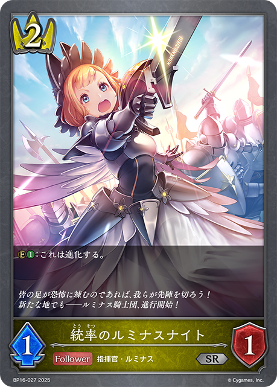
+3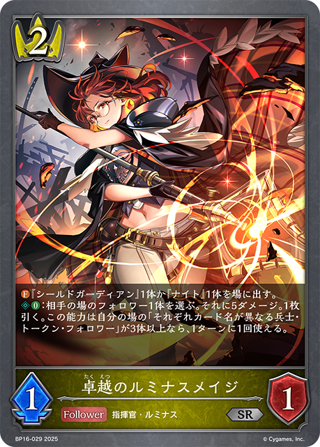
+3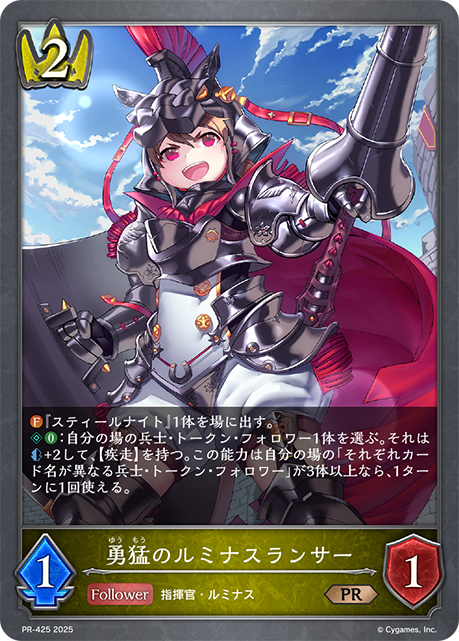
+3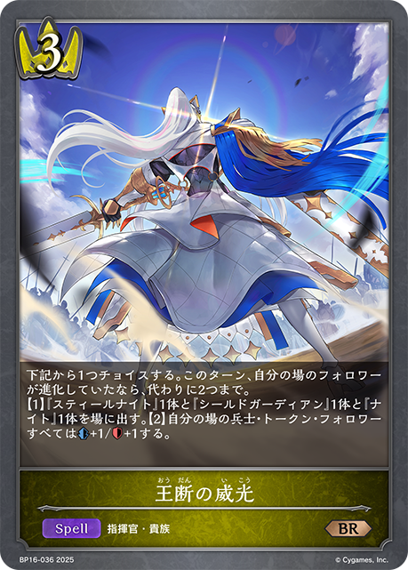
+3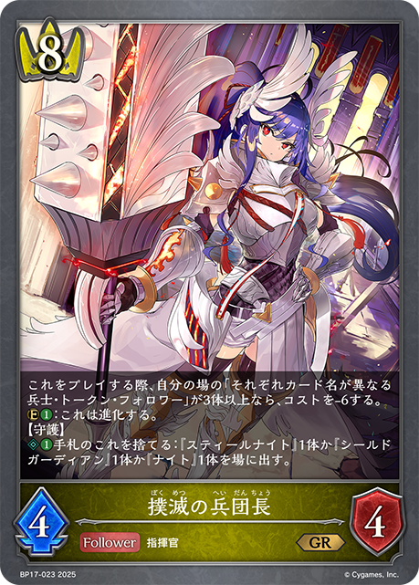
+3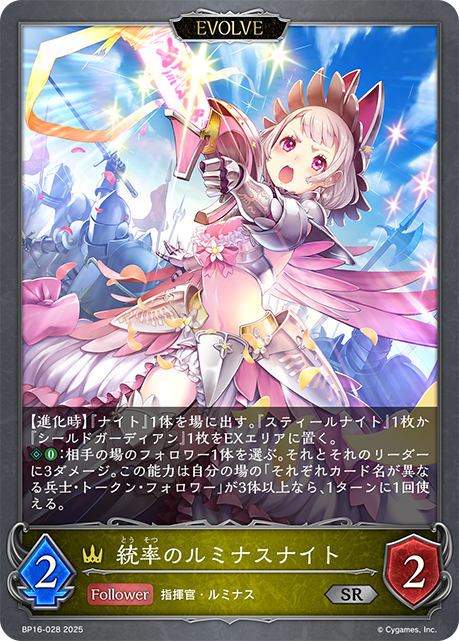
+2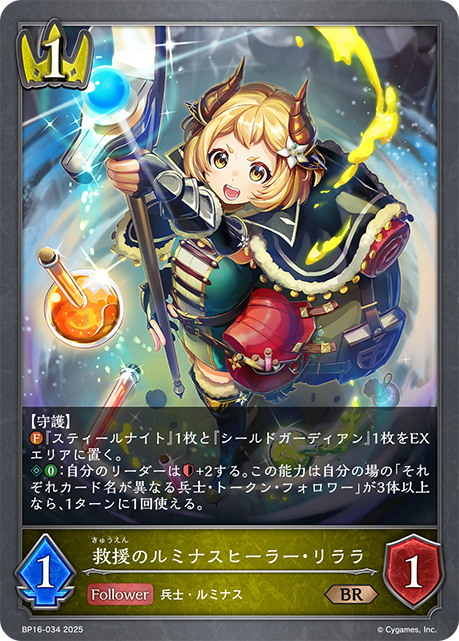
+2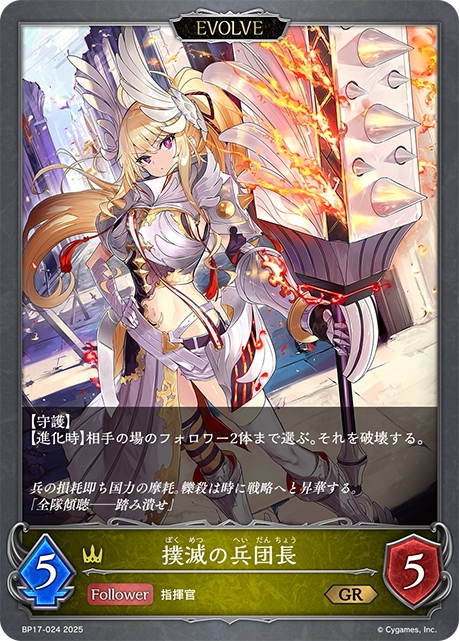
+1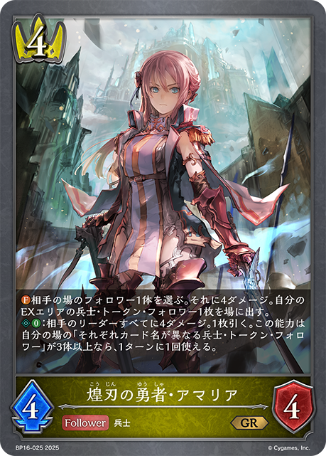
+1+1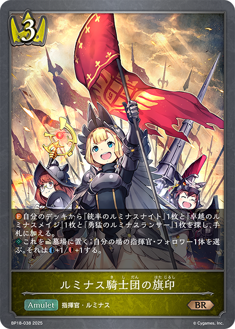
+1-3-3-3-3-2-2-2-2-1-1-1+3+3+2+2+1+1+1-2-2-2-2-1-1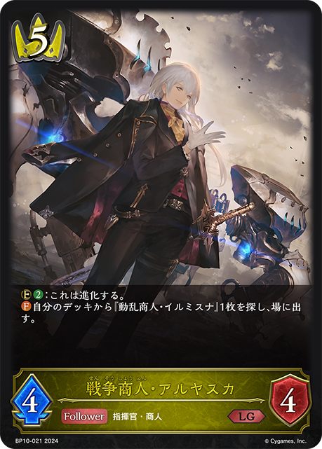
+3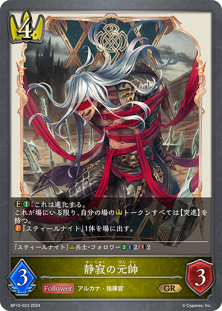
+3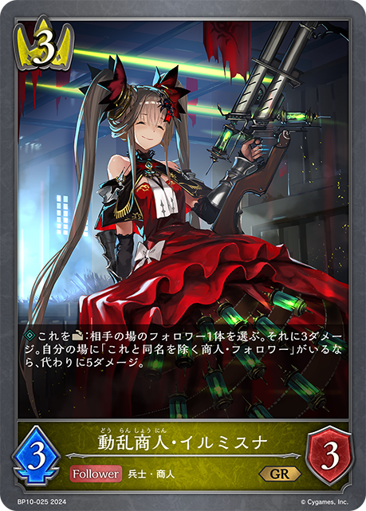
+3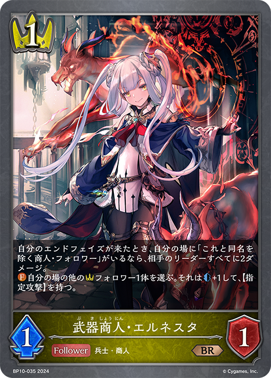
+3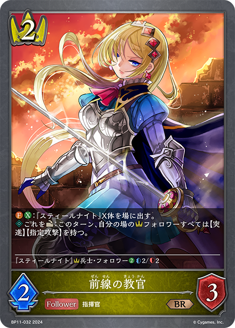
+3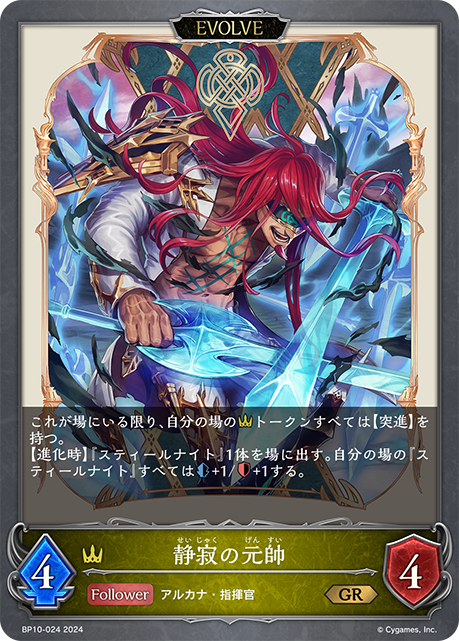
+2 +2+2
+2+2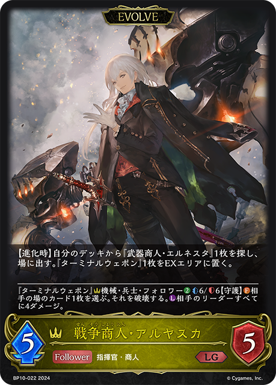
+1+1+1-3-3-3-3-3-2-2-1-1-1-1+3+2+1+1+1+1-3-3-2-1+3+2+1+1+1-3-2-1-1-1+3+3+3+2+1+1+1-3-3-2-2-2-1-1+3+3+3+2+2+1+1+1-3-3-2-2-2-1-1-1-1+3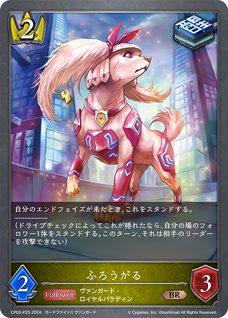
+3+2+2+1+1+1-2-2-1-1-1+3+2+1+1+1-3-2-1-1-1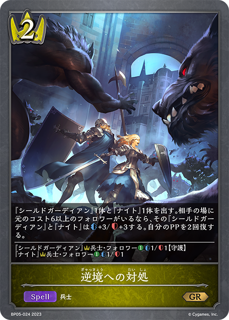
+2+1+1+1+1+1-3-3-3-3-2-2+3+3+3+2+1+1-3-3-2-2-1-1-1+3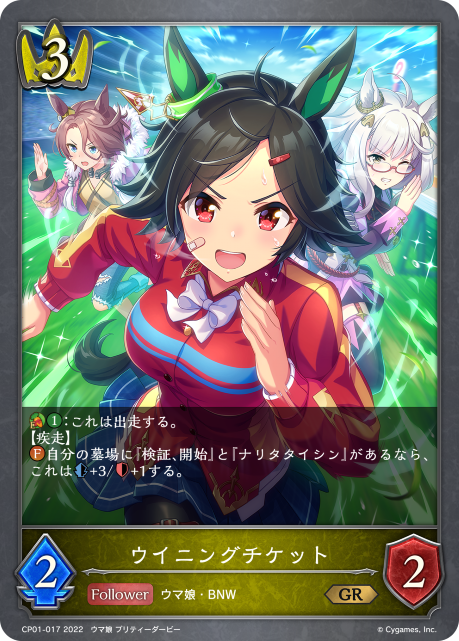
+3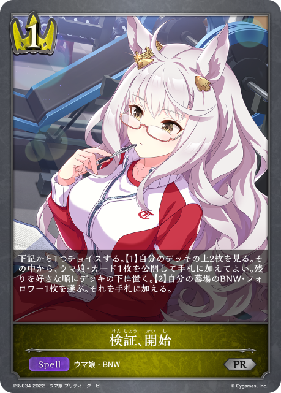
+3 +2
+2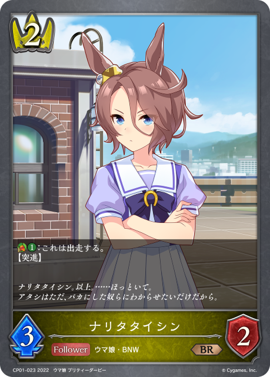
+2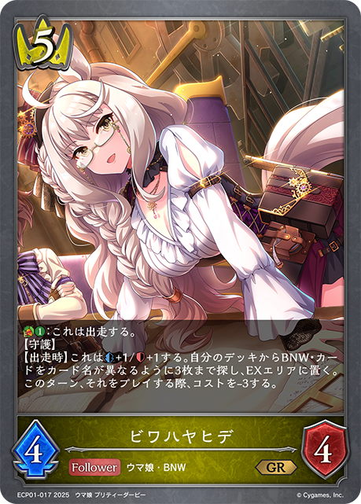
+2-2-2-2-1-1-1-1-1-1+3+3+2+2+2+1+1+1-3-3-2-2-2-1-1-1+3+3+2+2+1+1+1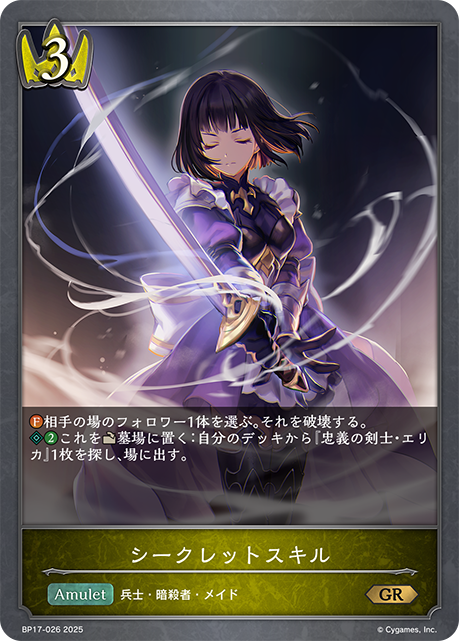
+1-3-3-2-2-2-1-1+3+3+3+2+1+1+1+1-3-3-2-2-2-1-1-1+3+3+2+2+1+1+1+1+1-3-3-2-2-2-1-1-1+3+3+2+2+1+1+1+1-3-3-2-2-2-1-1+3+3+3+2+1+1+1-3-3-2-2-2-1-1+3+2+2+1-3-3-2+3+3+3+2+1+1+1+1-3-3-2-2-1-1-1-1-1+3+3+2+2+2+2+2+1-3-3-2-2-2-1-1-1-1-1+3+3+2+2+2+1+1+1+1-3-3-2-2-2-1-1-1-1+3+3+2+2+2+1+1+1-3-3-2-2-2-1-1-1+3+3+2+2+2+1+1-3-3-2-2-2-1-1+3+3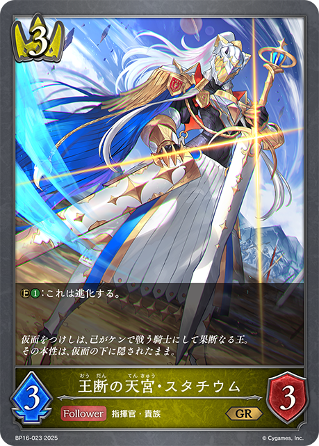
+3+3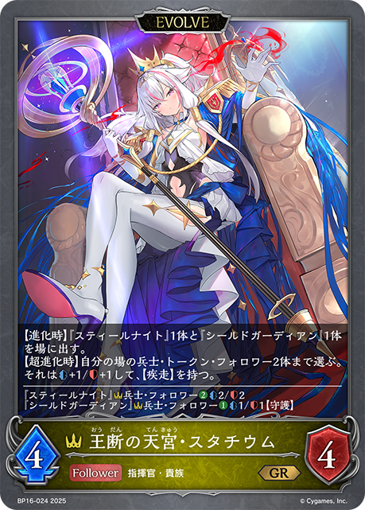
+2+2+2+2+1+1+1-3-3-3-2-2-2-2-1-1-1-1-1-1+3+3+3+2+1+1+1-3-3-2-2-1-1-1-1+3+3+2+2+2+1+1+1-3-3-2-2-2-1-1-1+3+3+3+2+2+1+1+1-3-3-2-2-2-1-1-1-1+3+3+3+2+1+1+1-3-3-2-2-2-1-1+3+2+2+2+1+1+1-3-3-2-2-1-1+3+3+3+2+1+1+1-3-3-2-2-2-1-1+3+3+2+2+1+1-3-2-2-2-1-1-1+3+3+3+2+1+1+1-3-3-2-2-1-1-1-1+3+3+3+2+1+1+1-3-3-2-2-2-1-1+3+3+3+2+1+1+1-3-3-2-2-2-1-1+3+3+2+2+1+1+1-3-3-2-2-2-1+3+3+3+2+1+1-3-3-2-2-1-1-1+3+3+2+2+2+1+1+1-3-3-2-2-2-1-1-1+3+3+3+3+2+1+1+1+1-3-3-3-2-2-2-1-1-1+1-3-3-3-3-3-2-2-2-2-2-1-1-1-1+3+3+3+2+2+1+1-3-3-2-2-2-1-1-1+3+3+3+2+1+1-3-3-2-2-1-1-1+3+3+3+2+1+1+1-3-3-2-2-2-1-1+3+3+3+2+1+1+1-3-3-2-2-2-1-1+3+3+3+2+1+1+1-3-3-2-2-2-1-1+3+3+3+2+1+1+1-3-3-2-2-2-1-1+3+3+2+1+1+1+1-3-3-2-2-1-1| 图片 | 平均张数 | 使用率 | 0张比例 | 1张比例 | 2张比例 | 3张比例 |
|---|---|---|---|---|---|---|
|
3.00 | 100.0% | 0.0% | 0.0% | 0.0% | 100.0% |
|
2.95 | 98.5% | 1.5% | 0.0% | 0.0% | 98.5% |
|
2.95 | 98.5% | 1.5% | 0.0% | 0.0% | 98.5% |
| 2.85 | 96.9% | 3.1% | 0.0% | 6.2% | 90.8% | |
|
2.86 | 95.4% | 4.6% | 0.0% | 0.0% | 95.4% |
|
2.55 | 95.4% | 4.6% | 7.7% | 15.4% | 72.3% |
|
2.78 | 93.8% | 6.2% | 0.0% | 3.1% | 90.8% |
| 2.71 | 93.8% | 6.2% | 0.0% | 10.8% | 83.1% | |
|
2.52 | 92.3% | 7.7% | 4.6% | 15.4% | 72.3% |
|
2.52 | 86.2% | 13.8% | 0.0% | 6.2% | 80.0% |
| 2.42 | 86.2% | 13.8% | 0.0% | 16.9% | 69.2% | |
|
2.45 | 84.6% | 15.4% | 0.0% | 9.2% | 75.4% |
|
0.88 | 63.1% | 36.9% | 46.2% | 9.2% | 7.7% |
|
1.38 | 60.0% | 40.0% | 7.7% | 26.2% | 26.2% |
|
0.63 | 23.1% | 76.9% | 0.0% | 6.2% | 16.9% |
|
0.51 | 20.0% | 80.0% | 0.0% | 9.2% | 10.8% |
| 0.20 | 18.5% | 81.5% | 16.9% | 1.5% | 0.0% | |
|
0.42 | 16.9% | 83.1% | 0.0% | 9.2% | 7.7% |
| 0.38 | 15.4% | 84.6% | 0.0% | 7.7% | 7.7% | |
|
0.35 | 15.4% | 84.6% | 3.1% | 4.6% | 7.7% |
|
0.28 | 15.4% | 84.6% | 4.6% | 9.2% | 1.5% |
|
0.32 | 12.3% | 87.7% | 0.0% | 4.6% | 7.7% |
|
0.31 | 12.3% | 87.7% | 1.5% | 3.1% | 7.7% |
|
0.20 | 9.2% | 90.8% | 0.0% | 7.7% | 1.5% |
| 0.09 | 9.2% | 90.8% | 9.2% | 0.0% | 0.0% | |
| 0.14 | 4.6% | 95.4% | 0.0% | 0.0% | 4.6% | |
| 0.14 | 4.6% | 95.4% | 0.0% | 0.0% | 4.6% | |
|
0.09 | 4.6% | 95.4% | 0.0% | 4.6% | 0.0% |
| 0.05 | 4.6% | 95.4% | 4.6% | 0.0% | 0.0% | |
| 0.09 | 3.1% | 96.9% | 0.0% | 0.0% | 3.1% | |
| 0.09 | 3.1% | 96.9% | 0.0% | 0.0% | 3.1% | |
| 0.09 | 3.1% | 96.9% | 0.0% | 0.0% | 3.1% | |
| 0.09 | 3.1% | 96.9% | 0.0% | 0.0% | 3.1% | |
| 0.08 | 3.1% | 96.9% | 0.0% | 1.5% | 1.5% | |
|
0.06 | 3.1% | 96.9% | 0.0% | 3.1% | 0.0% |
| 0.06 | 3.1% | 96.9% | 1.5% | 0.0% | 1.5% | |
|
0.03 | 3.1% | 96.9% | 3.1% | 0.0% | 0.0% |
| 0.05 | 1.5% | 98.5% | 0.0% | 0.0% | 1.5% | |
| 0.05 | 1.5% | 98.5% | 0.0% | 0.0% | 1.5% | |
| 0.05 | 1.5% | 98.5% | 0.0% | 0.0% | 1.5% | |
| 0.05 | 1.5% | 98.5% | 0.0% | 0.0% | 1.5% | |
| 0.05 | 1.5% | 98.5% | 0.0% | 0.0% | 1.5% | |
| 0.05 | 1.5% | 98.5% | 0.0% | 0.0% | 1.5% | |
| 0.05 | 1.5% | 98.5% | 0.0% | 0.0% | 1.5% | |
| 0.05 | 1.5% | 98.5% | 0.0% | 0.0% | 1.5% | |
| 0.03 | 1.5% | 98.5% | 0.0% | 1.5% | 0.0% | |
| 0.03 | 1.5% | 98.5% | 0.0% | 1.5% | 0.0% | |
| 0.03 | 1.5% | 98.5% | 0.0% | 1.5% | 0.0% | |
| 0.02 | 1.5% | 98.5% | 1.5% | 0.0% | 0.0% |
| 图片 | 平均张数 | 使用率 | 0张比例 | 1张比例 | 2张比例 | 3张比例 |
|---|---|---|---|---|---|---|
| 2.17 | 100.0% | 0.0% | 0.0% | 83.1% | 16.9% | |
|
2.00 | 98.5% | 1.5% | 0.0% | 95.4% | 3.1% |
| 1.85 | 93.8% | 6.2% | 3.1% | 90.8% | 0.0% | |
|
1.57 | 93.8% | 6.2% | 30.8% | 63.1% | 0.0% |
|
1.68 | 92.3% | 7.7% | 16.9% | 75.4% | 0.0% |
|
0.17 | 16.9% | 83.1% | 16.9% | 0.0% | 0.0% |
|
0.22 | 12.3% | 87.7% | 3.1% | 9.2% | 0.0% |
|
0.09 | 9.2% | 90.8% | 9.2% | 0.0% | 0.0% |
| 0.06 | 4.6% | 95.4% | 3.1% | 1.5% | 0.0% | |
| 0.06 | 3.1% | 96.9% | 0.0% | 3.1% | 0.0% | |
| 0.06 | 3.1% | 96.9% | 0.0% | 3.1% | 0.0% | |
| 0.03 | 1.5% | 98.5% | 0.0% | 1.5% | 0.0% | |
|
0.03 | 1.5% | 98.5% | 0.0% | 1.5% | 0.0% |
| 0.02 | 1.5% | 98.5% | 1.5% | 0.0% | 0.0% |